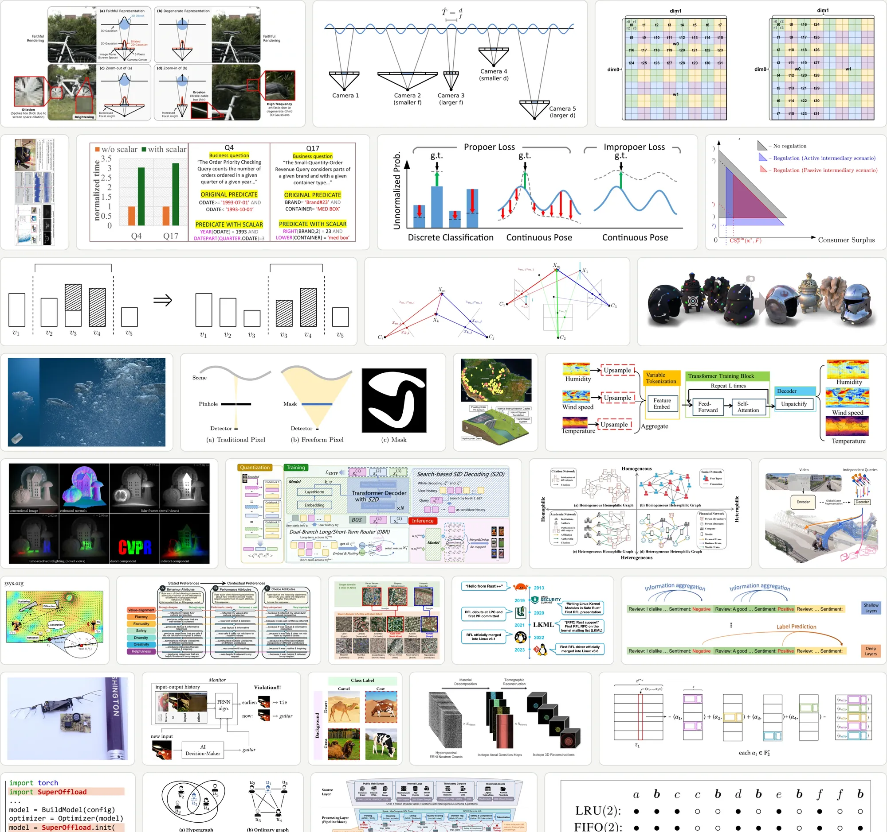
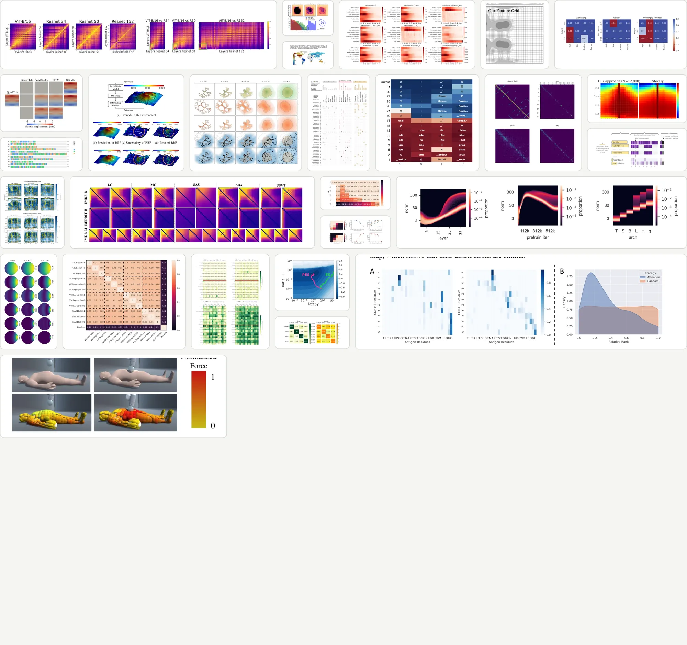
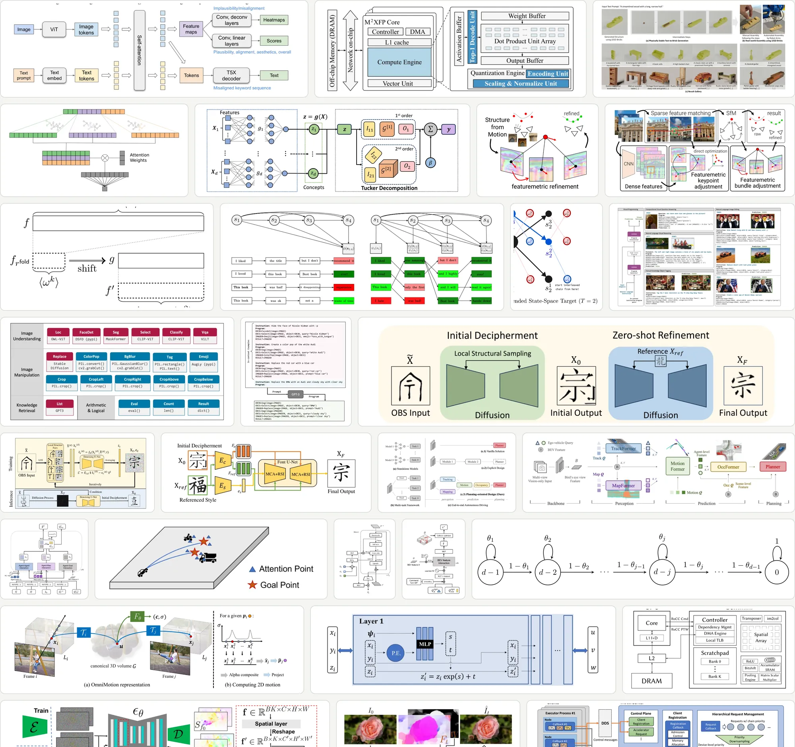
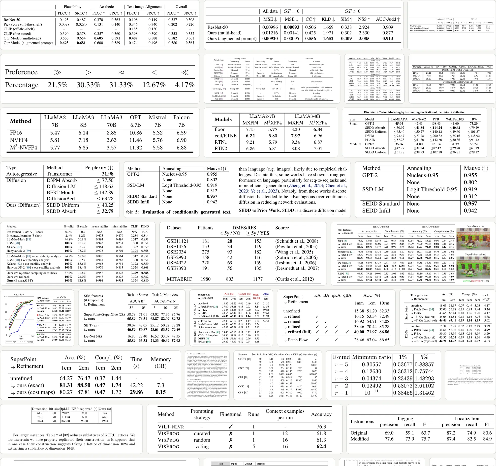
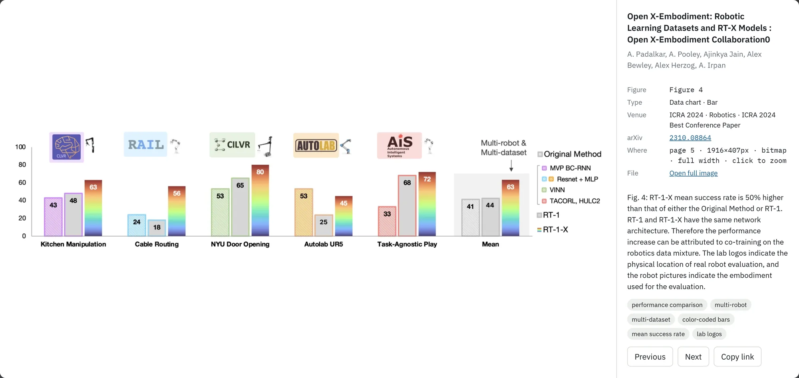

Paper Figure Library
GitHub
Open the gallery
Paper Figure Library
GitHub
Open the gallery
Asked AI to draw your paper figure. Got a mess?

01
02
03
paperfigure.net/en/?q=<keyword>&cat=method
paperfigure.net/en/?q=<keyword>&cat=data&chart=line
paperfigure.net/en/?q=<keyword>&cat=table
{{N_HEATMAP}}

{{N_METHOD}}

{{N_TABLES}}


{{N_FIGS}}
{{N_PAPERS}}
{{N_VENUES}}
{{N_AREAS}}